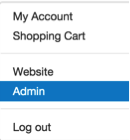
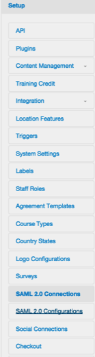

Log into TrainingRocket as an administrator.
|  |
Select Setup > SAML 2.0 Configurations.
|  |
Select New.
Click Save. Once saved this enables other IDPs to authenticate for TrainingRocket.

Note: SP-initiated flows and Just In Time (JIT) provisioning are supported.